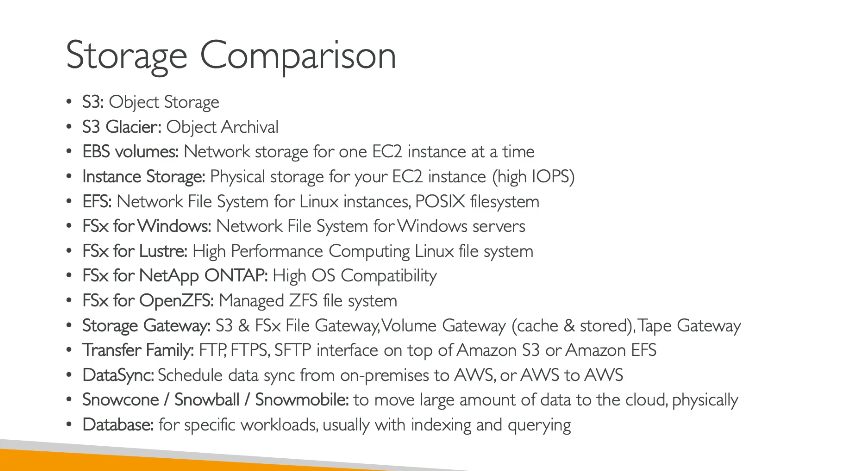

Tóm gọn

Dưới đây là tổng hợp chi tiết các dịch vụ lưu trữ AWS, cùng với các tính năng và ứng dụng của chúng:
1. Amazon S3 (Simple Storage Service):
- Loại lưu trữ: Lưu trữ đối tượng (Object Storage).
- Sử dụng: Lưu trữ dữ liệu không cấu trúc như hình ảnh, video, file log, sao lưu, và dữ liệu ứng dụng.
- Tính năng: API đặc thù để truy xuất và quản lý dữ liệu.
- Sử dụng cho lưu trữ lâu dài: Nếu cần lưu trữ dài hạn, có thể sử dụng Amazon S3 Glacier (archival storage).
2. Amazon EBS (Elastic Block Store):
- Loại lưu trữ: Lưu trữ khối (Block Storage) cho EC2 instances , network storage .
- Sử dụng: Kết nối ổ đĩa ảo với EC2 instance để lưu trữ dữ liệu.
- Tính năng: Các loại volume khác nhau:
- GP3: Lưu trữ giá rẻ và hiệu suất tốt.
- IO2: Dành cho các ứng dụng yêu cầu IOPS cao.
- Multitask (IO1 & IO2): Hỗ trợ đa tác vụ cho I/O cao.
3. EC2 Instance Storage:
- Loại lưu trữ: Lưu trữ vật lý(physical storage ) gắn liền với EC2 instance.
- Sử dụng: Lưu trữ tạm thời với IOPS rất cao, nhưng chỉ tồn tại khi EC2 instance đang chạy.
4. Amazon EFS (Elastic File System):
- Loại lưu trữ: Hệ thống tệp mạng (NFS) cho các instance Linux.
- Sử dụng: Các ứng dụng cần chia sẻ tệp giữa các EC2 instances.
- Tính năng: Hỗ trợ POSIX filesystem, có thể mở rộng linh hoạt, và có thể mount trên nhiều Availability Zones.
5. Amazon FSx:
- Loại lưu trữ: Hệ thống tệp cho các ứng dụng đặc biệt.
- Các loại FSx:
- FSx for Windows File Server: Hệ thống tệp Windows dành cho các ứng dụng Windows.
- FSx for Lustre: Hệ thống tệp hiệu suất cao dành cho HPC (High-Performance Computing).
- FSx for NetApp ONTAP: Tính tương thích cao với hệ thống tệp NetApp.
- FSx for OpenZFS: Quản lý hệ thống tệp ZFS.
6. Storage Gateway:
- Loại lưu trữ: Cầu nối giữa hệ thống lưu trữ tại chỗ và AWS.
- Các loại:
- File Gateway: Đồng bộ hóa dữ liệu giữa hệ thống tệp tại chỗ và Amazon S3 hoặc Amazon FSx.
- Volume Gateway: Mount volumes vào các máy chủ tại chỗ, nhưng sao lưu vào đám mây (EBS snapshots).
- Tape Gateway: Sao lưu dữ liệu dưới dạng tape và lưu trữ trong Amazon S3 hoặc Glacier.
7. AWS Transfer Family:
- Loại dịch vụ: Cung cấp FTP, FTPS, hoặc SFTP giao diện cho Amazon S3 hoặc Amazon EFS.
- Sử dụng: Dễ dàng chia sẻ dữ liệu và thực hiện sao lưu, di chuyển dữ liệu giữa các dịch vụ lưu trữ trên AWS mà không cần viết mã.
8. AWS DataSync:
- Loại dịch vụ: Đồng bộ hóa dữ liệu từ các hệ thống tại chỗ hoặc từ AWS tới AWS.
- Sử dụng: Di chuyển dữ liệu giữa các hệ thống lưu trữ trên AWS(s3,fsx window ,efs ) và hệ thống lưu trữ tại chỗ, hỗ trợ các giao thức NFS, SMB, HDFS.
- Tính năng: Duy trì metadata và quyền truy cập tệp khi di chuyển dữ liệu.
9. AWS Snow Family:
- Loại dịch vụ: Di chuyển dữ liệu vật lý khi không có đủ băng thông mạng.
- Các thiết bị:
- Snowcone: Thiết bị di động nhỏ gọn với khả năng cài đặt DataSync agent.
- Snowball: Thiết bị lớn hơn cho các khối lượng dữ liệu lớn.
- Snowmobile: Xe tải chứa thiết bị lưu trữ cho khối lượng dữ liệu cực lớn.
- Ứng dụng: Di chuyển dữ liệu vật lý từ các hệ thống tại chỗ vào AWS.
Tóm Tắt:
- Amazon S3: Dành cho lưu trữ đối tượng (Object Storage), rất linh hoạt cho các trường hợp sử dụng khác nhau như sao lưu, phục hồi và lưu trữ dài hạn.
- EBS và Instance Storage: Lưu trữ khối (Block Storage), dùng cho EC2 instance. EBS hỗ trợ khả năng mở rộng linh hoạt, trong khi Instance Storage mang lại hiệu suất cao.
- EFS và FSx: Hệ thống tệp mạng, EFS cho Linux, FSx cho các ứng dụng đặc biệt như Windows, Lustre, và OpenZFS.
- Storage Gateway: Cầu nối giữa lưu trữ on-prem và AWS cho các dịch vụ như file, volume, và tape.
- AWS Transfer Family: Giao diện FTP/FTPS/SFTP cho việc chuyển dữ liệu vào ra AWS.
- DataSync: Đồng bộ hóa dữ liệu on-prem/cloud khác qua các dịch vụ lưu trữ của AWS.
- Snow Family: Giải pháp di chuyển dữ liệu vật lý khi không đủ băng thông mạng.
FSx file gateway k còn hỗ trợ nên dùng
VPN hoặc Direct Connect kết hợp với Amazon FSx for Windows File Server:
Nếu yêu cầu của bạn là truy cập dữ liệu từ Amazon FSx for Windows File Server trực tiếp trên AWS từ môi trường on-premises, bạn có thể sử dụng AWS Direct Connect hoặc VPN để kết nối on-premises với AWS. Sau khi kết nối, bạn có thể trực tiếp truy cập FSx for Windows File Server qua SMB từ các máy chủ Windows của bạn.